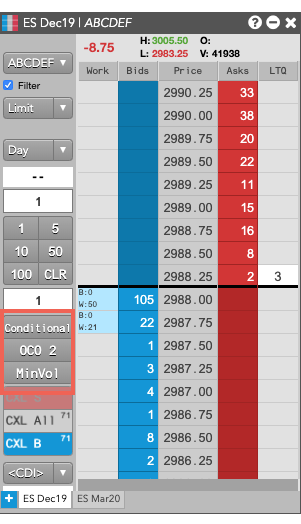
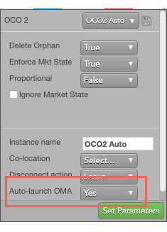
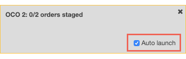

The Conditional and OCO 2 TT public algos support an "order building" mode that lets you dynamically build an OMA from existing or new orders in MD Trader. When order building mode is activated, the selected button and all MD Trader header panels are shaded yellow to indicate that building mode is active. You can then add or create orders to be managed by the OMA. New orders are added to MD Trader in a held state so they don't start working until the OMA is launched.
To simplify launching the Conditional and OCO 2 public algos from an MD Trader widget, you can add custom action buttons for the algos. The custom action button can also be associated with a specific template for an OMA.

Also, custom action buttons that support order building mode can be added to any visible MD Trader widget. You do not need to add one to other MD Trader widgets whose orders you want to use in the OMA.
To launch TT public OMAs in builder mode:


You can use an OMA order template to launch the OMA order automatically after you add the minimum number of orders required by an algo. You can either enable the Auto-launch OMA algos setting in the Algos & Autospreader Preferences to launch all OMAs automatically, or you can enable the setting for specific templates. For example, the following template enables auto-launch for the OCO 2 OMA.

When you enable the Auto-launch OMA setting, the order-builder OMA dialog looks similar to the following. In the case of an OCO 2 OMA, as soon as you add the second order, the algo launches automatically.

If you cancel the parent order of a Conditional or OCO 2 algo, the parent order is deleted and: